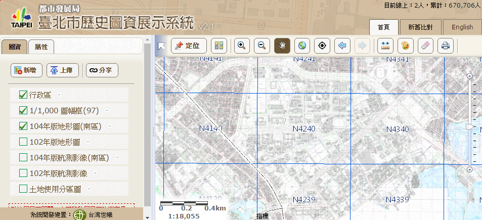
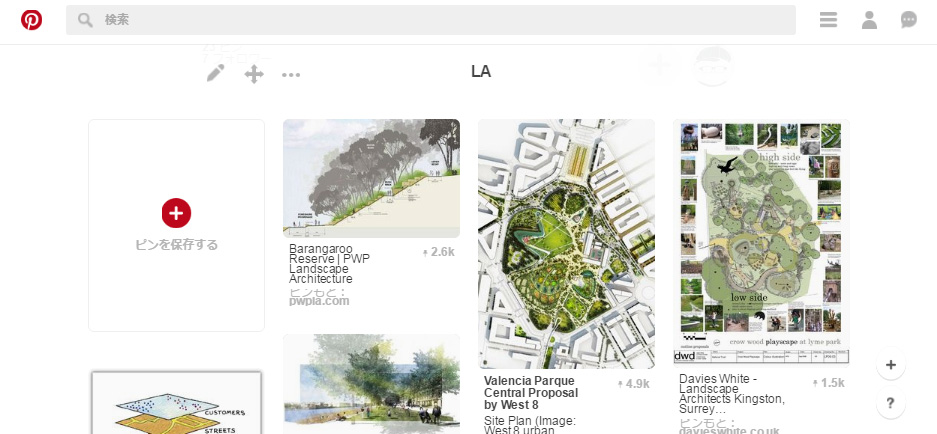
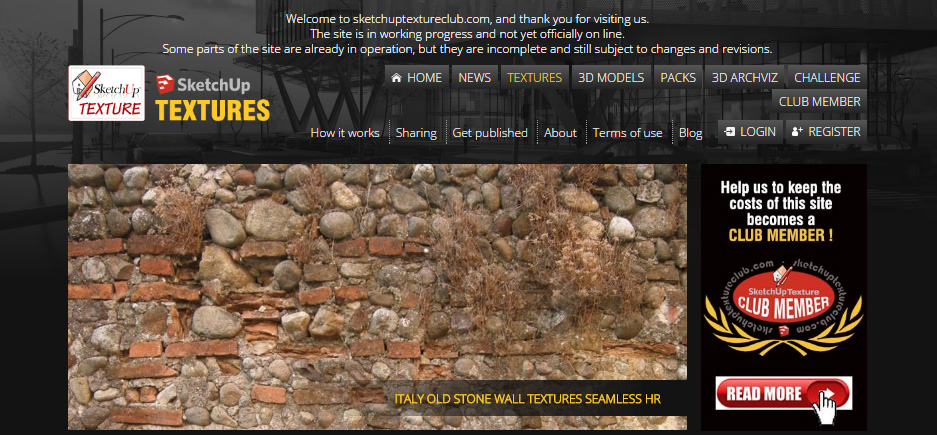
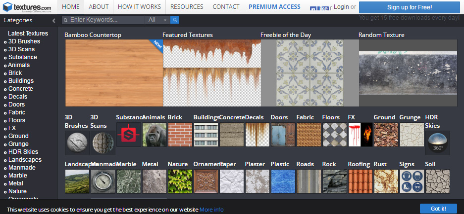
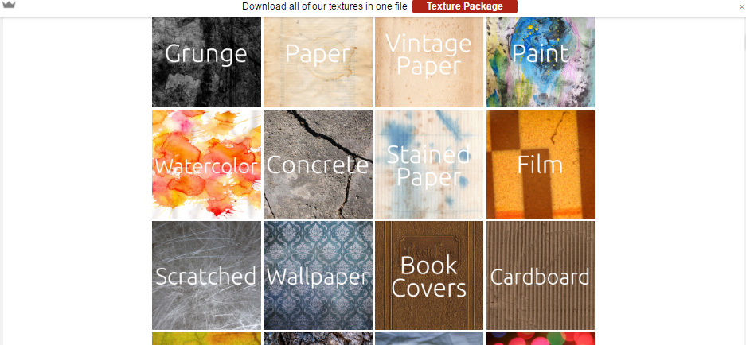

實用網站連結
查資料
台北市歷史圖資展示系統
會有台北市的地形CAD圖資，雖然不能載下CAD檔，但可以用來檢視周遭狀態。

全國土地使用分區資料查詢系統
可以用來查詢住宅區、商業區等土地使用的類型。
下水道圖資整合資訊系統
可以用來查詢下水道的排水方向以及集水口的位置，要至全國>雨水下水道打開圖層。
找靈感
一個圖庫的網站，可以查到很多表現法或是景觀設計的案例。

ISSUU
很常會被用做作品集的上傳平台，如果有需要參考的話可以來找找
系刊應該還有上傳在這裡吧
找素材
SketchUp Free texture
SKP的材質圖庫。

Textures
註冊後可以每天下載15個的素材

Lostandtaken
